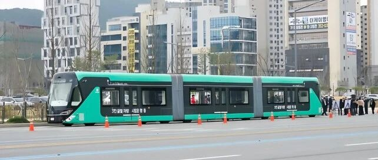

DAEJEON · SOUTH KOREA
Entering the Korean market
WE delivered Daejeon's first ART vehicle in April 2026. A trial-running event drew the city mayor, council members and transport officials, with the three-section articulated vehicle tested on the planned route between Eco Lake Park and Mannyeon Bridge.
6.5 km planned passenger route · target launch October 2026